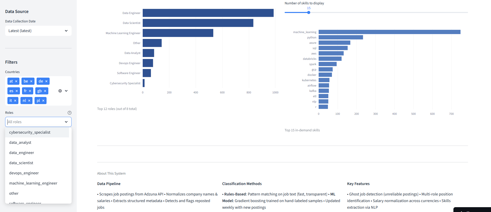
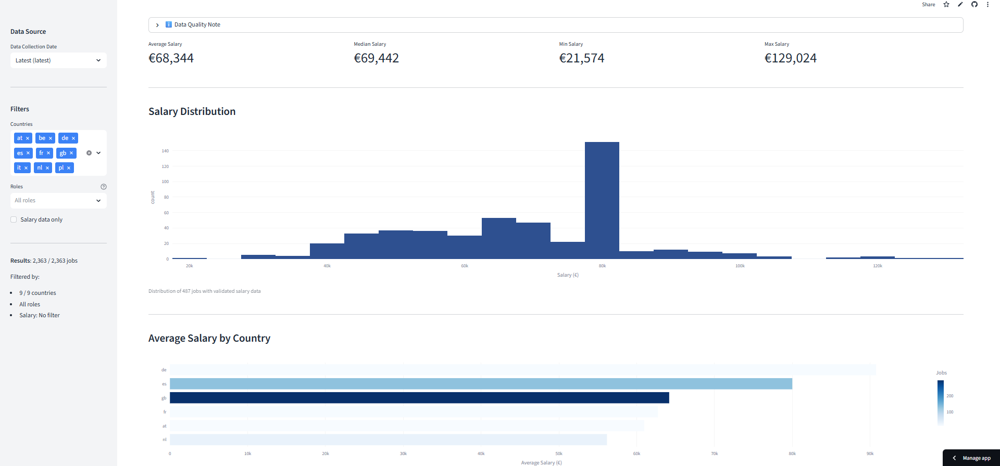
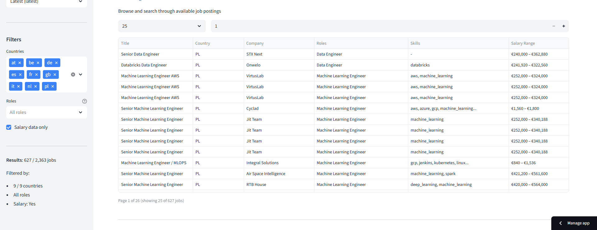

January 2026
Job Market Intelligence
Automated European job-market analysis with ML role classification, historical tracking and an interactive dashboard.




Pipeline
The system collects job postings, normalises and fingerprints them, classifies roles with TF-IDF + Logistic Regression, keeps historical snapshots and exposes the results through Streamlit.
Collect→Clean + deduplicate→Classify roles→Store snapshots→Dashboard + trends
Evidence
The documented role classifier reached a 91.6% F1-score, and the project includes automated tests plus scheduled GitHub Actions workflows.